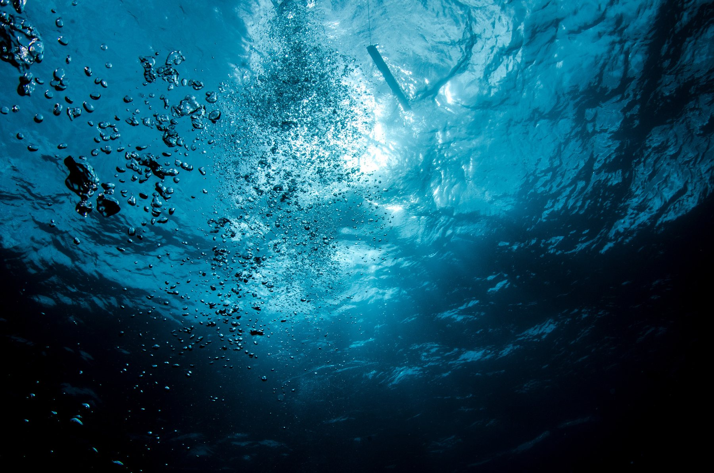
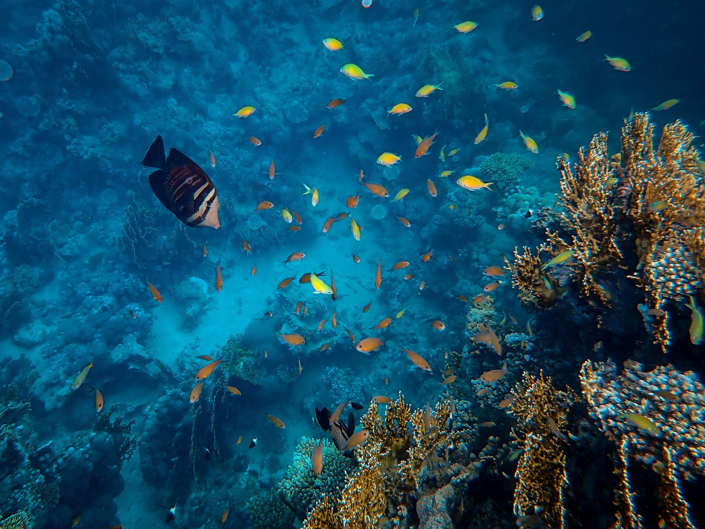
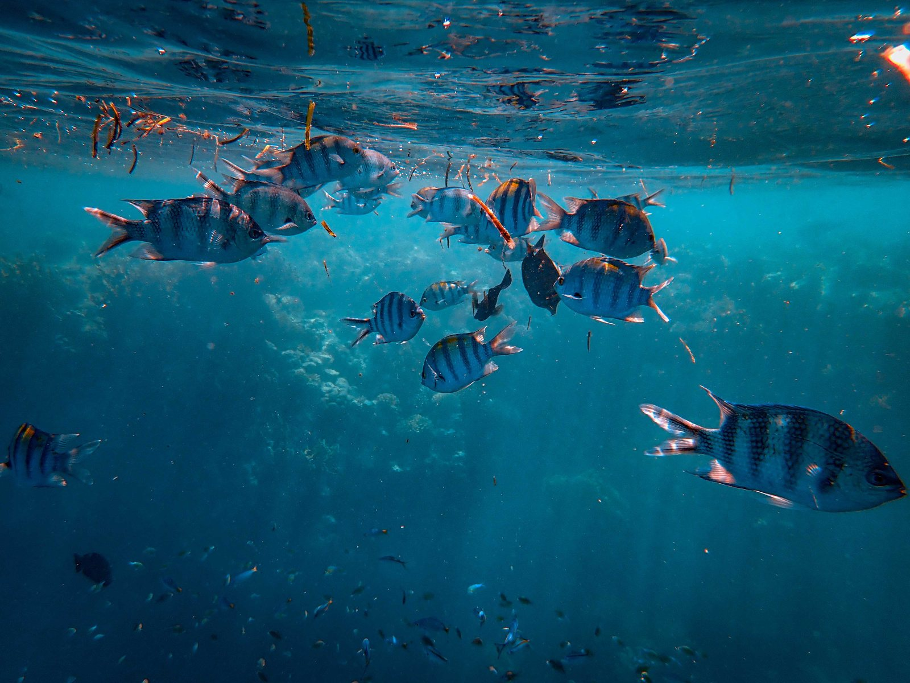

Data Analyst
One year of experience using SQL, Excel, and Power BI to make business data useful.
Data Analyst
Turning data into insight, sharing knowledge through teaching, and exploring what comes next.
Explore my projects01 / INTRODUCTION
With one year of data analyst experience and two years of teaching experience, I enjoy finding patterns in information and making ideas easier to understand.
Explore my work in business intelligence and analytics, the projects that have shaped my learning, and my current curiosity about quantum computing.

02 / ABOUT ME
I’m a Computer Science & Engineering graduate and data analyst. At Carrier Compiler, I used SQL and Excel to prepare data and built Power BI dashboards tracking course enrollment, revenue, and performance.
My two years teaching mathematics and computer science taught me to explain the “why” behind a solution — a habit I bring to analysis, collaboration, and learning about new technologies.
One year of experience using SQL, Excel, and Power BI to make business data useful.
Two years teaching mathematics and computer science and helping students build understanding.
03 / PROFESSIONAL EXPERIENCE
My experience spans data analytics, AI projects, and teaching — work that continues to shape how I approach problems and communicate solutions.
Carrier Compiler · Remote, Agra
Built Power BI dashboards for enrollment, revenue, and performance; queried data with SQL, cleaned it with Excel, and used statistical analysis to surface patterns.
The Entrepreneurship Network · Remote, Delhi
Built NexusClaw, a Bun/TypeScript coding assistant, integrating LLM tool calling, web research, and a self-correcting agent loop.
Self-employed · Agra
Taught maths (grades 6–10) and computer science (grades 11–12), mentoring students through personalised instruction.
Cook N Klean · Remote, Noida
Coordinated candidate sourcing, resume screening, interviews, and recruitment communication.

SQL, Power BI, Power Query, DAX, Excel, Tableau, statistics, data cleaning, and exploratory data analysis.
Python, Pandas, PyTorch, LangChain, RAG, vector databases, TypeScript, Bun, and Git.
04 / TECHNICAL EXPERTISE
I use a practical toolkit for data preparation, analysis, visualization, and building software projects. I’m currently exploring quantum computing as a learner.
Two years teaching mathematics and computer science — experience that helps me communicate technical ideas clearly and thoughtfully.
05 / SELECTED WORK
Projects in analytics, machine learning, and developer tools — built to investigate a question, explore an idea, or make a workflow more useful.
My analytics projects work through the full process: preparing real datasets, building clear visualizations, and communicating what the results can tell us.
View the projects
06 / PROJECT DETAILS
Each project starts with a question or a practical problem and develops through exploration and iteration.
Explored the TMDB 5000 dataset to test whether critical acclaim predicts box-office revenue. Cleaned and merged the data and prepared 5+ visualizations.
Python · Pandas · NumPy · Matplotlib · SeabornTwo-page analysis of 5,901 transactions with sales, profit, delivery, segment, forecast, and geographic views.
Power BI · Power Query · DAXAnalyzed 7,043 customers, created churn and revenue measures, and identified a high-risk segment with retention recommendations.
Power BI · Power Query · DAXPrepared educational text from PDF, TXT, DOCX, and EPUB files to fine-tune a Qwen3 0.6B LoRA adapter on CPU.
Python · Hugging Face · LoRA · OllamaBuilt a terminal coding assistant that explores, plans, and modifies a local codebase with LLM tools and web research.
Bun · TypeScript · LLM tool callingBuilt a machine learning model to predict Formula 1 lap times using historical race data and driver performance metrics.
Python · XGBoost · SHAP07 / ENGINEERING APPROACH
I aim to make the work clear and useful, from understanding the question through checking the result.
Clarify the problem, people, and context.
Inspect the data and test assumptions.
Choose an appropriate approach and implement it.
Check results, learn, and improve.
A PRACTICAL, ITERATIVE WAY OF WORKING
I combine investigation with clear communication, so the outcome is understandable as well as technically useful.
08 / EXPLORING WHAT’S NEXT
I’m exploring quantum computing and learning about its core concepts, the way it approaches computation, and how this emerging field may develop.
This is an area I’m exploring, not claiming professional experience in. I’m interested in understanding the fundamentals and discovering how they connect to the broader world of computing.
My current foundation is in data analysis and computer science, with two years of experience teaching mathematics and computer science.
THANK YOU FOR VISITING
Data analysis, teaching, and a curiosity for what comes next.